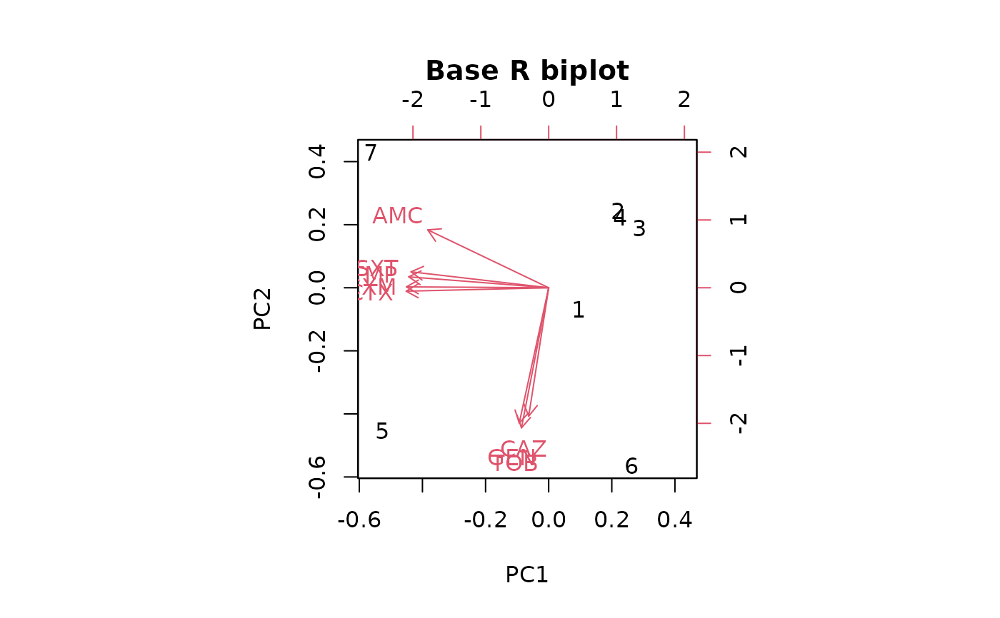
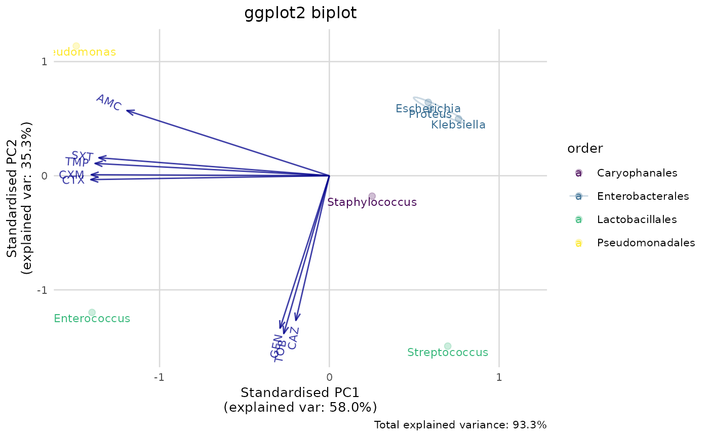

Produces a ggplot2 variant of a so-called biplot for PCA (principal component analysis), but is more flexible and more appealing than the base R biplot() function.
Usage
ggplot_pca(
x,
choices = 1:2,
scale = 1,
pc.biplot = TRUE,
labels = NULL,
labels_textsize = 3,
labels_text_placement = 1.5,
groups = NULL,
ellipse = TRUE,
ellipse_prob = 0.68,
ellipse_size = 0.5,
ellipse_alpha = 0.5,
points_size = 2,
points_alpha = 0.25,
arrows = TRUE,
arrows_colour = "darkblue",
arrows_size = 0.5,
arrows_textsize = 3,
arrows_textangled = TRUE,
arrows_alpha = 0.75,
base_textsize = 10,
...
)Source
The ggplot_pca() function is based on the ggbiplot() function from the ggbiplot package by Vince Vu, as found on GitHub: https://github.com/vqv/ggbiplot (retrieved: 2 March 2020, their latest commit: 7325e88; 12 February 2015).
As per their GPL-2 licence that demands documentation of code changes, the changes made based on the source code were:
Rewritten code to remove the dependency on packages
plyr,scalesandgridParametrised more options, like arrow and ellipse settings
Hardened all input possibilities by defining the exact type of user input for every argument
Added total amount of explained variance as a caption in the plot
Cleaned all syntax based on the
lintrpackage, fixed grammatical errors and added integrity checksUpdated documentation
Arguments
- x
an object returned by
pca(),prcomp()orprincomp()- choices
length 2 vector specifying the components to plot. Only the default is a biplot in the strict sense.
- scale
The variables are scaled by
lambda ^ scaleand the observations are scaled bylambda ^ (1-scale)wherelambdaare the singular values as computed byprincomp. Normally0 <= scale <= 1, and a warning will be issued if the specifiedscaleis outside this range.- pc.biplot
If true, use what Gabriel (1971) refers to as a "principal component biplot", with
lambda = 1and observations scaled up by sqrt(n) and variables scaled down by sqrt(n). Then inner products between variables approximate covariances and distances between observations approximate Mahalanobis distance.- labels
an optional vector of labels for the observations. If set, the labels will be placed below their respective points. When using the
pca()function as input forx, this will be determined automatically based on the attributenon_numeric_cols, seepca().- labels_textsize
the size of the text used for the labels
- labels_text_placement
adjustment factor the placement of the variable names (
>=1means further away from the arrow head)- groups
an optional vector of groups for the labels, with the same length as
labels. If set, the points and labels will be coloured according to these groups. When using thepca()function as input forx, this will be determined automatically based on the attributenon_numeric_cols, seepca().- ellipse
a logical to indicate whether a normal data ellipse should be drawn for each group (set with
groups)- ellipse_prob
statistical size of the ellipse in normal probability
- ellipse_size
the size of the ellipse line
- ellipse_alpha
the alpha (transparency) of the ellipse line
- points_size
the size of the points
- points_alpha
the alpha (transparency) of the points
- arrows
a logical to indicate whether arrows should be drawn
- arrows_colour
the colour of the arrow and their text
- arrows_size
the size (thickness) of the arrow lines
- arrows_textsize
the size of the text at the end of the arrows
- arrows_textangled
a logical whether the text at the end of the arrows should be angled
- arrows_alpha
the alpha (transparency) of the arrows and their text
- base_textsize
the text size for all plot elements except the labels and arrows
- ...
arguments passed on to functions
Details
The colours for labels and points can be changed by adding another scale layer for colour, such as scale_colour_viridis_d() and scale_colour_brewer().
Examples
# `example_isolates` is a data set available in the AMR package.
# See ?example_isolates.
# \donttest{
if (require("dplyr")) {
# calculate the resistance per group first
resistance_data <- example_isolates %>%
group_by(
order = mo_order(mo), # group on anything, like order
genus = mo_genus(mo)
) %>% # and genus as we do here;
filter(n() >= 30) %>% # filter on only 30 results per group
summarise_if(is.sir, resistance) # then get resistance of all drugs
# now conduct PCA for certain antimicrobial drugs
pca_result <- resistance_data %>%
pca(AMC, CXM, CTX, CAZ, GEN, TOB, TMP, SXT)
summary(pca_result)
# old base R plotting method:
biplot(pca_result)
# new ggplot2 plotting method using this package:
if (require("ggplot2")) {
ggplot_pca(pca_result)
# still extendible with any ggplot2 function
ggplot_pca(pca_result) +
scale_colour_viridis_d() +
labs(title = "Title here")
}
}
#> Warning: There were 73 warnings in `summarise()`.
#> The first warning was:
#> ℹ In argument: `PEN = (function (..., minimum = 30, as_percent = FALSE,
#> only_all_tested = FALSE) ...`.
#> ℹ In group 5: `order = "Lactobacillales"`, `genus = "Enterococcus"`.
#> Caused by warning:
#> ! Introducing NA: only 14 results available for PEN in group: order =
#> "Lactobacillales", genus = "Enterococcus" (minimum = 30).
#> ℹ Run `dplyr::last_dplyr_warnings()` to see the 72 remaining warnings.
#> ℹ Columns selected for PCA: "AMC", "CAZ", "CTX", "CXM", "GEN", "SXT",
#> "TMP", and "TOB". Total observations available: 7.
#> Groups (n=4, named as 'order'):
#> [1] "Caryophanales" "Enterobacterales" "Lactobacillales" "Pseudomonadales"
#>


# }